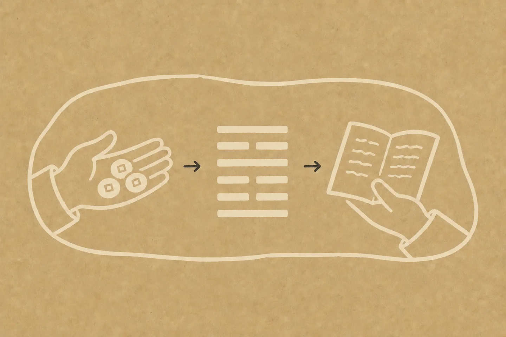
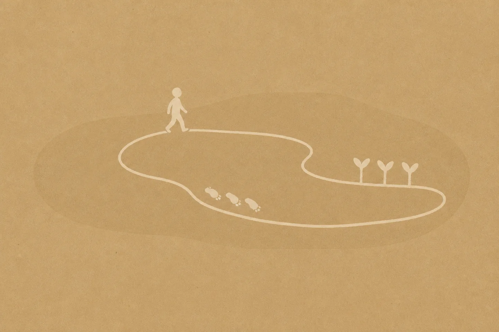

Your question sets the subject.
The decision, people involved, constraints, and timeframe define what the figure must address.
Why BourneWise
BourneWise generates the hexagram first. Claude Opus 5 explains the result it receives. The model writes the interpretation; it does not choose the figure.This separation keeps the source of the reading visible and gives every answer a fixed input you can inspect.

Question, cast, and interpretation remain visible as three separate stages.
Every reading follows the same order. The model enters only after the casting engine has completed the figure.
The decision, people involved, constraints, and timeframe define what the figure must address.
The primary hexagram, moving lines, and transformed figure are computed independently of the language model.
The question and computed figure are passed to Claude Opus 5 as evidence for the explanation.
Both methods use the same casting sequence. They differ in how much of the resulting structure is interpreted.
Reads the primary hexagram against the current situation. Best for a focused view of where things stand.
Adds moving lines, the transformed hexagram, and line-by-line change analysis. Best when the path of change matters.
The result is useful when it helps you inspect assumptions, notice change, and choose a next step without pretending an open situation has become certain.
The model cannot redraw, replace, or override the generated hexagram.
The answer should separate concrete signals from imaginative extension and uncertainty.
Return to the answer after acting. Compare what changed, what held, and what you would decide differently next time.

Reflection becomes useful when it changes the next action, not when it merely preserves an answer.